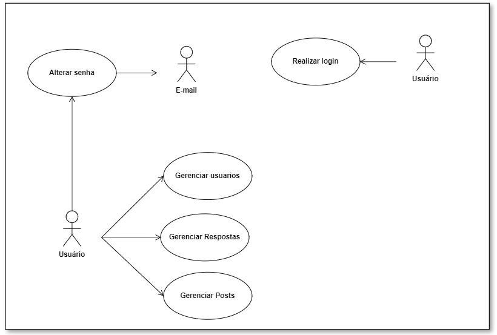

Usuário habilitado a cadastrar usuários e gerenciar posts pelo sistema
02
Email
Sistema externo habilitado via autenticação de token a prover a recuperação de senha
Identificação dos Casos de Uso
UC
Nome do UC
UC-01
Realizar Login
UC-02
Alterar senha
UC-03
Gerenciar usuários
UC-04
Gerenciar posts
UC-05
Gerenciar respostas
Diagrama de Casos de Uso

Especificação dos Casos de Uso
Histórico de Revisão
Data
Versão
Descrição
Autor
29/01
1.0
Descrição dos Casos de Uso
Gian, Giulia, Helder, Júlio, Silas
30/01
1.1
Fluxos Básicos, Alternativos e de Exceção
Gian, Giulia, Helder, Júlio, Silas
02/01
1.2
Atualização do Documento
Gian, Giulia, Helder, Júlio, Silas
Caso de Uso: UC-01 x Realizar Login
Por: Silas Neres - 20/0043536
Descrição: Caso de Uso: UC-01 Realizar Login:
Atores: Usuário
Pré-Condições: O ator deve estar cadastrado no sistema.
Pós-Condições: O ator fica habilitado a realizar ações de modificações nas respostas atualizadas em sua própria área de respostas do sistema.
Requisitos Funcionais:
Épico
Feature
US
Descrição
03
08
26
Eu como usuário gostaria de realizar login com email e senha para adentrar no sistema
Requisitos Não-Funcionais:
URPS+
ID
Descrição
INTERFACE
RN4
O sistema deve ser web
IMPLEMENTAÇÃO
RN5
O sistema deve assegurar os dados do usuário com autenticação Auth Guard e JWT.
RESTRIÇÃO DE DESIGN
RN7
A interface do sistema deve seguir a paleta de verde, azul e branco e possuir um modo dark, com um estilo mais minimalista
Fluxo Básico: Login autenticado
O caso de uso se inicia quando o ator acessa a tela de login.
O sistema solicita as informações para login.
O ator informa seu email e sua senha.
O sistema valida as credenciais do usuário.
O sistema informa que a autenticação foi realizada com sucesso
O caso de uso se encerra
Fluxo de Exceção A: Usuário não cadastrado
No passo 3, se o ator não estiver cadastrado:
O sistema não valida as credenciais do usuário.
O sistema informa que o ator não está cadastrado
O fluxo retorna para o passo 2 do fluxo base
Fluxo de Exceção B: Informações incorretas
No passo 3, caso as credenciais estejam incorretas.
O sistema não valida as credenciais do usuário.
O sistema informa que o email ou a senha está incorreta
O fluxo retorna para o passo 2 do fluxo base
Caso de Uso: UC-02 x Alterar Senha
Por: Júlio César - 19/0015721
Descrição: Caso de Uso: UC-02 Alterar Senha: Este caso de uso especifica que o ator altere sua senha cadastrada. Apenas usuários cadastrados podem recuperar sua senha. Para alterar a senha, o usuário receberá um email com link para alterar a senha, a fim de confirmar sua identidade.
* Atores: Usuário, Email
* Pré-Condições: O ator Professor-Aluno deve estar cadastrado no sistema.
* Pós-Condições: O ator Professor-Aluno deverá ser autenticado com a nova senha cadastrada.
* Requisitos Funcionais:
Épico
Feature
US
Descrição
03
08
27
Eu como usuário gostaria de ter a possibilidade de recuperar minha senha através do email caso eu a esqueça
Requisitos Não-Funcionais:
URPS+
ID
Descrição
INTERFACE
RN4
O sistema deve ser web
IMPLEMENTAÇÃO
RN5
O sistema deve assegurar os dados do usuário com autenticação Auth Guard e JWT.
RESTRIÇÃO DE DESIGN
RN7
A interface do sistema deve seguir a paleta de verde, azul e branco e possuir um modo dark, com um estilo mais minimalista
Fluxo Básico: Alterar a senha
O caso de uso se inicia quando o ator Usuário escolhe a opção “esqueceu a senha?”.
O sistema solicita o email cadastrado.
O ator informa as informações necessárias
O sistema valida o email digitado.
O ator Email recebe o token para a alteração da senha
O ator Email envia para o ator Usuário um email para a alteração da senha
O ator Professor-Aluno acessa seu e-mail cadastrado e clica no link para alterar a senha.
O ator Professor-Aluno informa a nova senha
O sistema retorna a pagina de login
O caso de uso se encerra.
Fluxo de Exceção: Validação de E-mail
No passo 4, caso o e-mail digitado esteja incorreto:
O sistema informa uma mensagem de erro
O fluxo retorna ao passo 2 do fluxo básico.
Caso de Uso: UC-03 x Gerenciar Usuários
Por: Giulia Alcantara - 18/0121308
Descrição: Caso de Uso: UC-04 Gerenciar usuários cadastrados: Este caso de uso especifica a ação de controle que um usuário executa no sistema, com objetivo de gerenciar usuários. Apenas usuários cadastrados podem gerenciar outros usuários cadastrados no sistema. O usuário pode buscar outro e, a partir disso, então gerenciá-lo, selecionando-o, visualizando seu perfil e favoritando-o; Também pode gerenciar seus próprios dados, a partir da seleção de seu próprio perfil, podendo visualizá-lo, editar seus dados, excluir sua conta ou até favoritar a si mesmo para melhorar sua posição no ranking. Após a validação no sistema, o usuário torna-se apto a realizar as operações da sua área restrita.
Atores: Usuário
Pré-Condições: O ator deve estar cadastrado no sistema; O ator deve estar logado com autenticação no sistema.
Pós-Condições: O ator fica habilitado a realizar ações referentes aos usuários desejados em sua própria área do sistema.
Requisitos Funcionais:
Épico
Feature
US
Descrição
02
04
13
Eu como usuário gostaria de dar nota para os outros usuários para mudar suas posições no ranking
02
04
14
Eu como usuário gostaria de visualizar a minha posição no ranking geral para fins de melhorá-la
03
08
22
Eu como usuário gostaria de visualizar os meus dados cadastrais em uma aba de perfil para poder conferir se as informações estão corretas
03
08
23
Eu como usuário gostaria de ter a possibilidade de buscar outros usuários para poder averiguar as perguntas que um usuário já fez
03
08
24
Eu como usuário gostaria de editar os dados do meu perfil para caso alguma informação tenha sido preenchida incorretamente possa ser mudada
Requisitos Não-Funcionais:
URPS+
ID
Descrição
INTERFACE
RN4
O sistema deve ser web
IMPLEMENTAÇÃO
RN5
O sistema deve assegurar os dados do usuário com autenticação Auth Guard e JWT.
RESTRIÇÃO DE DESIGN
RN7
A interface do sistema deve seguir a paleta de verde, azul e branco e possuir um modo dark, com um estilo mais minimalista
Fluxo Básico: Visualização de um usuário desejado
O caso de uso é iniciado ator decide buscar um usuário
O sistema solicita o e-mail do usuário desejado
O ator informa o e-mail do usuário que deseja buscar
O sistema disponibiliza os resultados correspondentes a busca
O ator seleciona o usuário desejado
O sistema exibe o perfil do usuário desejado
O caso de uso se encerra.
Fluxo Alternativo A: Editar os dados de um usuário
No passo 6, caso o ator deseje editar os dados da própria conta:
O ator clica na opção de “Editar dados”
O sistema exibe todos os dados do usuário que podem ser alterados
O ator modifica os dados desejados
O sistema valida se os dados modificados estão corretos
O ator salva os dados
O fluxo retorna ao passo 7 do fluxo básico.
Fluxo Alternativo B: Deletar a conta de um usuário
No passo 6, caso o ator deseje deletar a própria conta:
O ator clica na opção “Deletar conta”.
O sistema informa que a conta foi deletada
O fluxo retorna ao passo 7 do fluxo básico.
Fluxo Alternativo C: Favoritar um usuário
No passo 6, caso o ator deseje favoritar um usuário:
O ator aperta na estrela de favoritar
O fluxo retorna ao passo 7 do fluxo básico.
Fluxo de Exceção:
No passo 3, caso o e-mail fornecido esteja incorreto:
O sistema exibe a ausência de resultados na busca
O fluxo retorna ao passo 2 do fluxo básico.
Caso de Uso: UC-04 x Gerenciar Respostas
Por: Helder Lourenço - 18/0121847
Descrição: Caso de Uso: UC-10 Gerenciar respostas: Este caso de uso especifica a ação de controle que um usuário executa no sistema, com objetivo de gerenciar respostas. Apenas usuários cadastrados podem gerenciar respostas no sistema. O usuário pode selecionar perguntas e, a partir delas, gerenciar suas respectivas respostas sendo adição, exclusão e até favoritar a resposta que mais se adequa a pergunta. Após a validação no sistema, o usuário torna-se apto a realizar as operações da sua área restrita.
Atores: Usuário
Pré-Condições: O ator deve estar cadastrado no sistema; O ator deve estar logado com autenticação no sistema.
Pós-Condições: O ator fica habilitado a realizar ações de modificações nas respostas atualizadas em sua própria área de respostas do sistema.
Requisitos Funcionais:
Épico
Feature
US
Descrição
01
03
10
Eu como usuário gostaria de poder responder todas as perguntas disponibilizadas no fórum para fins de ajudar outros usuários
01
03
11
Eu como usuário gostaria de ser capaz de visualizar as respostas para fins de soluções de dúvidas
01
03
12
Eu, como usuário, gostaria de deletar minhas respostas para fim de escrita incorreta.
02
06
17
Eu, como usuário, gostaria de avaliar as respostas fornecidas para fim de destaque das melhores respostas
02
06
18
Eu, como usuário, gostaria de visualizar as respostas em ordem de rankeamento, para saber as melhores respostas fornecidas
Requisitos Não-Funcionais:
URPS+
ID
Descrição
INTERFACE
RN4
O sistema deve ser web
RESTRIÇÃO DE DESIGN
RN7
A interface do sistema deve seguir a paleta de verde, azul e branco e possuir um modo dark, com um estilo mais minimalista
Fluxo Básico: Cadastrar respostas
O caso de uso se inicia quando o ator seleciona a pergunta desejada
O sistema exibe a pergunta desejada e uma lista de respostas da pergunta
O ator seleciona a opção de "Responder"
O sistema solicita as informações para a resposta
O ator informa o corpo da resposta
O sistema exibe a nova lista de respostas
O sistema volta para a página principal
O caso de uso encerra
Fluxo Alternativo A: Deletar resposta
No passo 2 caso o ator deseje deletar uma resposta:
O ator decide qual resposta ele deseja deletar
O sistema exibe a opção de deletar apenas para as respostas do próprio autor
O ator seleciona a resposta que quer deletar
O sistema confirma a delação da resposta
O fluxo retorna ao passo 6 do fluxo básico
Fluxo Alternativo B: Favoritar Resposta
No passo 2 caso o ator deseje favoritar uma resposta:
O ator seleciona a opção de "Favoritar" na resposta desejada
O sistema exibe a resposta favoritada em sua nova posição na listagem
O fluxo retorna ao passo 6 do fluxo básico
Fluxo de Exceção:
No passo 5 caso os dados da resposta não estejam corretos: